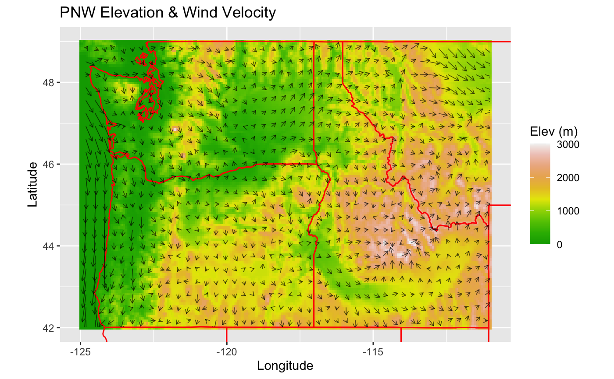

Creates a comprehensive plot
wrf_standardPlot( raster = NULL, states = FALSE, polys = NULL, bgName = NULL, ctrName = NULL, uName = NULL, vName = NULL, bgRasterColors = grDevices::terrain.colors(10), bgRasterValues = NULL, bgRasterNaColor = "transparent", stateWidth = 0.5, stateColor = "red", stateFill = "transparent", polyWidth = 0.5, polyColor = "red", polyFill = "transparent", ctrBreaks = NULL, ctrWidth = 0.25, ctrColor = "black", arrowCount = 1000, arrowScale = 0.05, arrowWidth = 0.8, arrowColor = "black", arrowHead = 0.05, arrowAlpha = 1, title = NULL, xlab = NULL, ylab = NULL, flab = NULL, xlim = NULL, ylim = NULL, ratio = NULL )
| raster | A RasterBrick with layers for WRF variables. |
|---|---|
| states | Logical for including state polygons or not. |
| polys | A SpatialPolygonsDataFrame. |
| bgName | The name of the background raster layer. |
| ctrName | The name of the contour raster layer. |
| uName | The name of the u component raster layer. |
| vName | The name of the v component raster layer. |
| bgRasterColors | Vector of colors to use for the background raster's n-color gradient. |
| bgRasterValues | A vector of positions (between 0 and 1) for each color in the bgRasterColors vector. |
| bgRasterNaColor | Color for na background raster values. |
| stateWidth | Line thickness of state polygon outlines. |
| stateColor | Color for state polygon outlines. |
| stateFill | Color for state polygon interiors. |
| polyWidth | Line thickness of spatial polygon outlines. |
| polyColor | Color for spatial polygon outlines. |
| polyFill | Color for spatial polygon interiors. |
| arrowCount | Number of vector field arrows to draw. |
| arrowScale | Scale factor of vector field arrow body length. |
| arrowWidth | Line thickness of vector field arrows. |
| arrowColor | Color of vector field arrows. |
| arrowHead | Size of vector field arrowheads. |
| arrowAlpha | Transparency of vector field arrows. |
| title | Title of plot. |
| xlab | Label for x-axis. |
| ylab | Label for y-axis. |
| flab | Label for legend fill scale. |
| xlim | A vector of coordinate longitude bounds. |
| ylim | A vector of coordinate latitude bounds. |
| ratio | Aspect ratio of plot. |
A ggplot object.
# \donttest{ library(WRFmet) library(raster) wrf_standardPlot( raster = example_PNW, bgName = "HGT", uName = "U10", vName = "V10", states = TRUE, arrowAlpha = 0.75, title = "PNW Elevation & Wind Velocity", flab = "Elev (m)", xlim = c(-125, -111), ylim = c(42, 49), ratio = 1.4 )# }